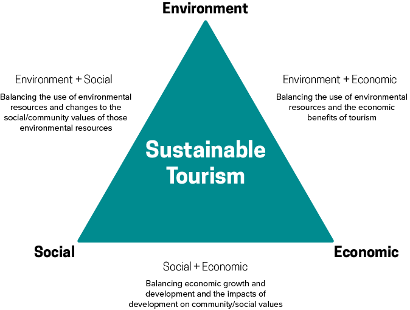

Demand Shift Toward Responsible Travel

Recent market studies have shown sustained consumer interest for travel options that are environmentally conscious and culuturally aware. This kind of travel falls under the category of ecotourism: Responsible travel to natural areas that conserves the environment and improves the welfare of local people.
According to a 2012 survey, the ‘green’ travel trend is gaining momentum among TripAdvisor members, as 71% said they plan to make more eco-friendly choices in the next 12 months compared to 65% that did so in the past 12 months.
93% of Conde Nast Traveler readers surveyed in 2011 said that travel companies should be responsible for protecting the environment, and 58% said their hotel choice is influenced by the support the hotel gives to the local community.
More than 90% of U.S. travelers surveyed by the online travel publisher TravelZoo in 2010 said that they would choose a ‘green,’ environmentally conscious hotel if the price and amenities were comparable to those at a non-sustainable, non-green hotel.
The CMIGreen Traveler Study Report 2010 asked responsible travelers how the global how the global economic crisis had affected their travel plans: 54% reported taking a “greener” vacation within the last 12 months, “43% of survey respondents say they would be willing to pay up to 5% more to decrease their ‘ecological footprint’ on their next trip; almost as many say they would pay more than that.”
Source: Crest RTI Trend Stats